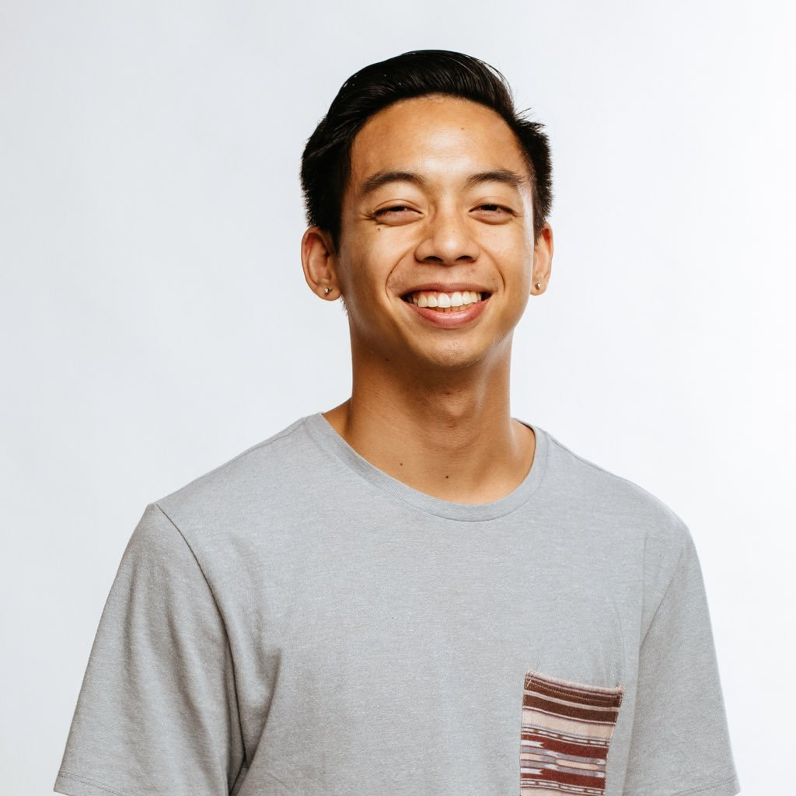

About Me

Hello there! My name is Marvie Solis. I was born and raised in Carson, CA, now currently residing in Orange, CA. I am a recent graduate from the University of California, Irvine with a Bachelors of Science in Electrical Engineering. I am currently employed as a Service Technician with the Irvine Company, as well as a part-time student at UCI. I have a variety of passions which include web development, video games, DJing, basketball, dance, and anything automotive related.
As an aspiring web developer, I am taking a bootcamp hosted at the University of California, Irvine in order to improve my skillsets. I aim to create websites that thrive in both form and function without anything being detrimental to the users experience.
In regards to my other passions, I play numerous of games on a variety of platoforms. However, my main platform is the Xbox One. I am also very passionate about the automotive industry. I currently own a Scion FRS and I enjoy modifying different aspects of my car to improve it both aesthetic and performance wise. I also strive to remain physically healthy and athletic. During my freetime, I am a dancer on the dance team, KABA MODERN, which is based in UCI. Lastly, I DJ and create music mixes for clients all over Southern California.